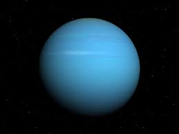

Mercúrio, o menor planeta do sistema solar, orbita mais próximo do Sol. Com temperaturas extremas entre -173°C e 427°C, sua superfície é marcada por crateras e vales profundos.
Vênus
Vênus é o planeta mais quente do Sistema Solar, com temperaturas que chegam a 462°C, superando até mesmo Mercúrio. Sua atmosfera é predominantemente composta por dióxido de carbono, criando um efeito estufa descontrolado. Além disso, sua rotação é retrógrada, o que significa que o Sol nasce no oeste e se põe no leste.
Marte
Marte, o quarto planeta do Sistema Solar, é conhecido como o "Planeta Vermelho" devido à sua superfície oxidada. Ele possui montanhas impressionantes, como o Olympus Mons, a maior montanha conhecida no Sistema Solar.
Júpiter
Júpiter, o maior planeta do Sistema Solar, é conhecido por sua atmosfera turbulenta e pela Grande Mancha Vermelha, uma tempestade gigante que existe há séculos. Possui mais de 70 luas conhecidas, incluindo Io, que tem vulcões ativos, e Europa, com um oceano subsuperficial de água líquida. Júpiter também desempenha um papel crucial na proteção do Sistema Solar, agindo como um "varredor" de asteroides e cometas devido à sua gravidade.
Saturno
Saturno, o sexto planeta do Sistema Solar, é reconhecido por seus belos anéis compostos principalmente de gelo, poeira e rocha. Este gigante gasoso possui mais de 80 luas, incluindo Titã, a maior delas, com uma atmosfera densa e lagos de metano líquido em sua superfície. Sua rotação rápida faz com que o planeta tenha uma forma achatada nos polos.
Urano

Urano, o sétimo planeta do Sistema Solar, destaca-se por sua inclinação extrema de eixo, girando de lado em relação ao plano de sua órbita. Sua atmosfera contém principalmente hidrogênio e hélio, mas sua coloração azul-esverdeada vem da presença de metano na atmosfera. Urano tem um sistema de anéis fino e numerosas luas, incluindo Miranda, com suas falhas geológicas únicas.
Netuno
Netuno, o oitavo e último planeta do Sistema Solar, é um mundo gelado e misterioso localizado além de Urano. Sua atmosfera turbulenta apresenta ventos extremamente rápidos e uma grande mancha escura conhecida como a Grande Mancha Escura, semelhante à Grande Mancha Vermelha de Júpiter. Netuno possui um sistema de anéis tênue e 14 luas conhecidas, incluindo Tritão, que possui características geológicas intrigantes, como geiseres de nitrogênio líquido.